mu-Tant Manual: Wavetable Drone Synth User Guide
mu-Tant: Wavetable Drone Synthesiser.
Prefer a file? Download the manual as a PDF. Back to mu-Tant · release notes · all guides.
1. Introduction
mu-Tant is a wavetable drone synthesiser from Transwarp Development Project. It runs as a VST3 plug-in, a CLAP plug-in, and a standalone application.
mu-Tant is a drone instrument, not a note instrument. Each of up to eight independent voices runs two wavetable oscillators continuously - the oscillators never start or stop. Instead of triggering notes, you sculpt a continuously evolving tone: a drawable gate pattern chops rhythmic bursts out of the drone, dual multi-mode filters shape it, and a per-voice modulator bank warps pitch, timbre, and filter over time.
mu-Tant shares its interface shell, modulator engine, mixer, and FX rack with its sibling mu-Clid. The difference is the engine: where mu-Clid triggers samples on Euclidean hits, mu-Tant sustains wavetable drones shaped by a drawn gate.
Every feature is available to everyone: all eight voices, the full gate editor and preset saving. mu-Tant is free to download and use, with every feature, and a one-off £20 licence removes the licence reminder (see Supporting mu-Tant).
Who Is This For?
mu-Tant is for sound designers and producers who work with evolving pads, drones, textures, and generative ambient material. It is equally at home in a DAW session - fully automatable and synchronised to host transport - or as a standalone instrument for live performance and sketching.
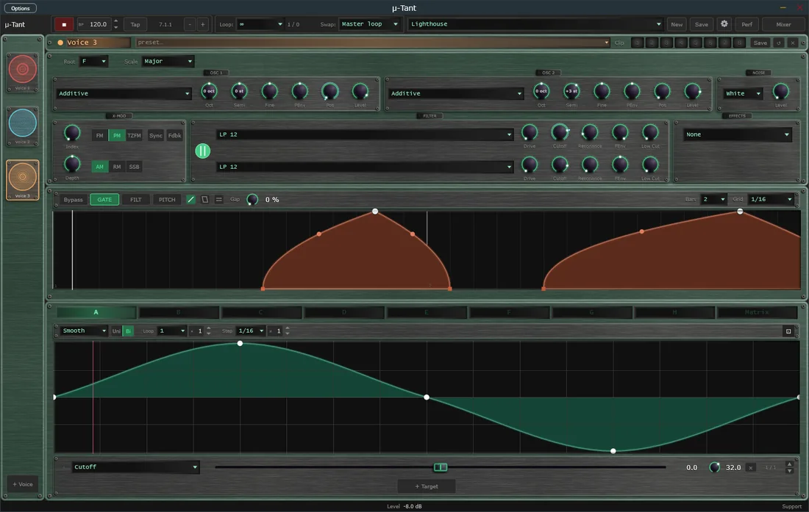
2. The Drone Concept
A traditional synthesiser is silent until you press a key; the note starts on key-down and ends on key-up. mu-Tant inverts this. Its oscillators are free-running - they are always producing sound. What you hear is shaped not by note triggers but by three things working together:
- The gate - a drawn pattern of attack/decay shapes that opens and closes a volume gate, carving rhythm out of the continuous tone.
- The modulators - up to eight per voice, slowly (or quickly) warping pitch, wavetable position, filter cutoff, and cross-modulation.
- The dual filter - two independent multi-mode filters in series or parallel, each able to resonate, comb, or shelve the evolving spectrum.
Because nothing ever retriggers from zero, mu-Tant excels at sounds that breathe and shift continuously - the gate adds rhythm without the choppiness of a re-struck note.
3. Installation
Plug-in Files
mu-Tant ships in three formats:
- VST3 — copy mu-Tant.vst3 to %ProgramFiles%\Common Files\VST3\
- CLAP — copy mu-Tant.clap to %ProgramFiles%\Common Files\CLAP\
- Standalone — run mu-Tant.exe from any location
Content Folder
On first launch mu-Tant creates a content folder at %USERPROFILE%\Documents\TDP\muTant\ with sub-folders for presets (full preset files, .muTant), voices (single-voice preset files, .muPattern) and your own wavetables. You can ask mu-Tant to start from your own preset: tick Save as Default in the Save window, and that preset is loaded when mu-Tant starts and whenever you press New.
Supporting mu-Tant
mu-Tant is free to download and use, and every feature works for everyone. A copy without a licence shows a polite reminder each time it loads. A one-off licence for £20 removes the reminder: after you pay, a licence key is sent by email from Lemon Squeezy, our payment provider, and entering the key removes the reminder for good. The key changes nothing else; mu-Tant works the same with or without it.
A copy without a key shows a polite 'Support mu-Tant' window every time you load mu-Tant: each new instance in your DAW, and each time the standalone app starts. It has three buttons:
- Maybe later — closes the window for that instance and carries on. It appears again the next time you load mu-Tant.
- Enter licence key — opens the 'Enter licence key - mu-Tant' panel, where you type in your key.
- Get a licence — opens the checkout page in your web browser. A licence is a one-off payment of £20, and a key is emailed to you.
The reminder cannot be switched off without a licence. To bring the window back at any time, click the Support link at the right of the Status Bar, or the Support button in the About panel.
To enter your key, click Enter licence key in the Support window, or click the mu-Tant logo to open the About panel and click Enter a key. In the 'Enter licence key - mu-Tant' panel (it reads 'Enter your licence key to remove the support reminder. Everything works either way.'), paste your key into the Licence key box and click Activate (or press Return). If you do not have a key yet, click Get a licence to open the checkout page in your web browser. mu-Tant needs an internet connection the first time, to register the key. One key can be used on up to 5 machines. When the key is accepted the panel shows a confirmation and closes, the About panel thanks you for your support, and the Support window and Support link no longer appear.
A licensed copy shows 'Thank you for supporting mu-Tant.' in the About panel.
Once activated, mu-Tant checks your key with the server now and then when it starts. If you are offline at that moment it carries on working as normal for up to 30 days.
If activation fails, the panel tells you why. Check that you pasted the whole key and that you are online, then try again. A key that has already been used on 5 machines needs one of them released first; use Contact Support at the bottom of the Settings page. If the computer has no internet connection at all, the licence key panel shows a machine code at the bottom. Send that code to Contact Support and you can be sent an offline licence file for that computer, to place in the mu-Tant content folder.
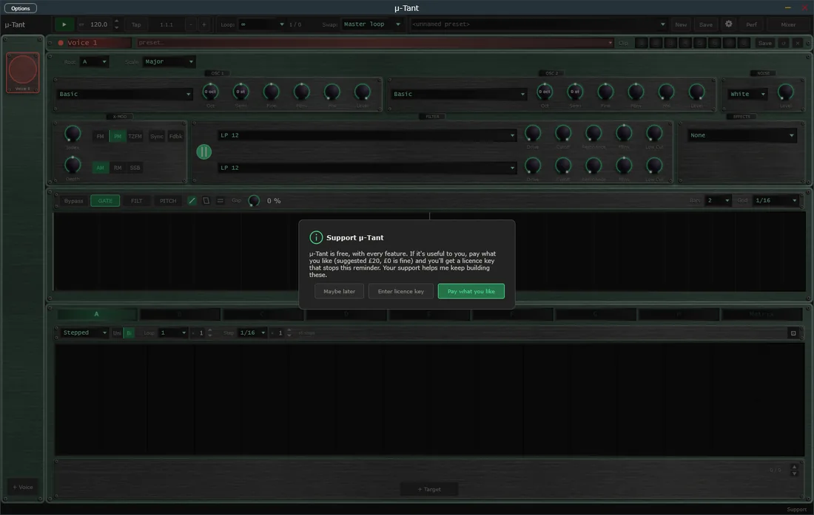
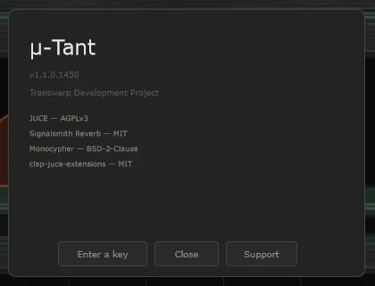
4. Interface Overview
The mu-Tant window is divided into four regions:
- Transport Bar (top) — playback, BPM, presets, mixer, and settings
- Voice Sidebar (left) — one item per active voice, plus an Add button
- Voice Editor (centre) — oscillators, noise, cross-mod, filters, effects, gate editor, and modulators for the selected voice
- Mixer overlay — opened from the transport bar, replacing the editor
- Status Bar (bottom) — the name, value and unit (ms, s, Hz, kHz, %, dB, semitones, cents, octaves or a note name) of the control you last touched, with a small Support link at the right-hand end. When a newer version is available, an Update available link appears beside Support (see Update Check in the Settings chapter)
The window has two sizes, Medium and Large, chosen in Settings (Display, Size). Everything scales with it. In the standalone application an Options button at the top left of the window opens the audio and MIDI device settings.
5. Transport Bar
Controls from left to right:
- mu-Tant logo — click to open the About panel, where you can also support mu-Tant or enter a key
- Play / Stop — in DAW mode follows the host transport and BPM, even while the plug-in is bypassed; in standalone starts and stops playback. Locked while an external MIDI clock controls play (see MIDI Clock Sync). While stopped, the gate is closed (silent); press Play to hear the gated drone, or use the gate Bypass to audition the raw tone.
- BPM display — read-only in DAW mode; editable in standalone. Tempo runs from 20.0 to 300.0 BPM with one decimal (for example 127.5; whole tempos show .0). Click the up or down arrow to step one whole BPM and keep the fraction (127.5 becomes 128.5); Shift+click steps a tenth. Double-click to type a value such as 127.5 or 127,5; a value outside the range is clamped to it. The same field appears in Settings. Locked, and showing the clock's tempo to a tenth, while an external MIDI clock sets the tempo. The clock drives both the gate patterns and the modulators.
- Clock lamp — standalone only. Replaces the Tap button and sits between the BPM display and the Position readout, and appears only while MIDI clock sync is on with Messages set to Clock only or Clock + Transport (it is hidden with Transport only, and when Source is Internal). Dim amber means waiting for clock, green means locked to the clock, red means the clock was lost and the transport has stopped. The lamp stays steady; it never blinks. Hover over it to read its state in the status bar. See MIDI Clock Sync.
- Tap button — standalone only. Takes the place of the Clock lamp whenever the lamp is not shown (the internal clock, or MIDI clock sync set to Transport only), so you see Tap or the lamp, never both. Tap it in time with the beat to set the tempo: it needs two taps, averages your last four intervals, and starts a new count if you pause for more than two seconds. The result is rounded to a tenth of a BPM, kept within 20 to 300, and written into the BPM field.
- Nudge buttons (− and +) — standalone only. Two small buttons just right of the Position readout. Hold − to run the groove 4 % slower, or + to run it 4 % faster, to line up with another player by ear. Let go and the set tempo returns exactly; the BPM field never changes. Under an external MIDI clock, holding a button shifts the groove against the clock by that amount, and the shift stays until the next Start.
- Position — bar, beat, and sixteenth readout (e.g. 3.2.1). In DAW mode it follows the host's position, even while the plug-in is bypassed, and counts in the host's time signature: in 3/4 a bar has three beats, in 7/8 it has seven eighth-note beats, and the last number is the sixteenth within the beat. Bar 1 starts where the host's bar 1 starts, so a pickup bar is counted correctly. The standalone counts in the time signature chosen in Settings (4/4 by default). The time signature only changes the readout; mu-Tant's gate patterns and modulator loop lengths still treat a bar as four beats.
- Loop dropdown — the master loop. Choices are the infinity symbol (none) or 16 to 256 steps in steps of 16. A counter beside it shows the current step and the loop length, for example 1 / 64.
- Swap dropdown — beside the Loop group, labelled Swap:. Chooses when a queued preset change takes effect: Master loop (at the end of the master loop), Voice loop (at the end of the voice's own loop) or Bar (at the next bar line). It is saved with the preset. Hover over it to read its description in the status bar.
- Preset dropdown / New / Save — load and save full .muTant presets. New loads your default preset (see Content Folder) after asking whether to discard unsaved changes.
- Settings (gear) icon — opens the Settings overlay.
- Perf button — standalone only. Sits between the Settings icon and the Mixer button and turns on Performance mode (also Ctrl+P). See Performance Mode in the Presets chapter.
- Mixer button — opens the mixer overlay. The label changes to Sequencer while the mixer is open.
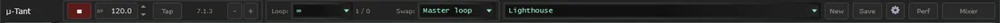
6. Voice Sidebar
The sidebar shows one item per active voice (up to eight). Each item displays a miniature spectrum animation driven by the voice's post-insert audio, the voice colour, and the voice name. Click an item to select that voice for editing.
The + Voice button at the bottom creates a new voice with default settings and the next unused palette colour (maximum eight; the button is disabled at eight). Voices can be reordered by dragging. To remove a voice use the Delete (×) button in the voice header - a confirmation is required, and the last voice cannot be removed.
Each voice automatically receives a distinct palette colour that appears on its sidebar item, header bar, and the sub-panel borders inside the editor, and follows the voice through reorder and delete operations.
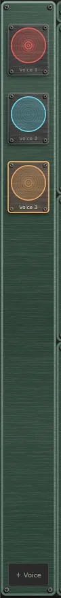
7. Voice Header
At the top of the voice editor:
- Name — click the name to rename the voice.
- Voice preset dropdown — load a single voice from a .muPattern file in the Voices folder.
- Clip strip — eight numbered pads that store and recall versions of this voice (see Clips in the Presets chapter).
- Save — saves this voice as a .muPattern file.
- Reset (circular arrow) / Delete (×) — reset to defaults / remove the voice (both confirm first). Reset also clears the voice's clips, and its confirmation then says so.
Just below the header, the Root and Scale dropdowns set the shared tonal centre for this voice (see Oscillators).
8. Oscillators (OSC 1 and OSC 2)
Both oscillators run simultaneously and are free-running - their phases never reset. The result is a continuously evolving tone rather than a triggered note.
Shared Tonal Centre
Both oscillators share the same Root (C to B) and Scale, set in the two dropdowns under the voice header. The available scales are Major, Minor, Dorian, Phrygian, Lydian, Mixolydian, Locrian, Harmonic Minor, Pentatonic Major, Pentatonic Minor, Blues, and Chromatic. The root and scale define the harmonic space both oscillators move within.
Per-Oscillator Controls
Each oscillator has a wavetable selector plus six knobs:
- Oct (-3 to +3 octaves) — octave offset from the base note
- Semi (-12 to +12) — scale-degree offset (integer steps through the scale)
- Fine (plus or minus 100 cents) — off-scale detune
- PEnv (plus or minus 24 semitones) — pitch-envelope depth: how far the gate editor's PITCH layer shifts this oscillator's pitch
- Pos (0 to 255) — wavetable frame position; morphs through the table
- Level — how loud this oscillator is going into the filters (see Source Levels)
Modulating Semi with a stepped modulator snaps cleanly between scale notes (integer jumps). Modulating Semi with a smooth modulator glides through frequency space, passing through off-scale pitches for a glissando effect.
Wavetables
Each oscillator's wavetable selector chooses the waveform set it morphs through with the Pos knob. mu-Tant uses the Serum/Vital 2048-samples-per-frame format internally, and offers three sources in the dropdown:
- Built-in tables — a set of procedural factory tables, automatable by index. Their names are short so they fit the selector, for example Basic and Pulse.
- Wavetables folder — drop .wav wavetables into Documents\TDP\muTant\Wavetables (sub-folders become categories) and they appear under their own headings; selected by path so they survive preset reload.
- Load .wav… — import any Serum/Vital-format wavetable .wav from disk; the path is saved with the preset.
The Pos knob (and its modulation) sweeps smoothly through the frames of whichever table is selected.
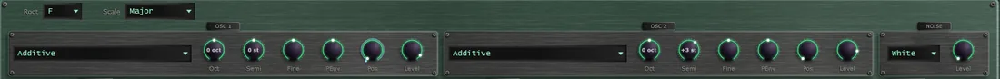
9. Cross-Modulation (X-MOD) and Noise
X-MOD has two independent lanes that run in parallel. Osc 2 is always the modulator; Osc 1 is the carrier. Each lane has one knob plus a mode switch.
Lane A - Phase / Index
The Index knob sets the modulation amount; the mode switch picks how it is applied:
- FM — true frequency modulation (Osc 2 modulates Osc 1's frequency; rich, can drift pitch at high index)
- PM — phase modulation (the default; classic DX-style FM that stays in tune)
- TZFM — through-zero FM (cleaner, in-tune spectra at high index - the bell that doesn't go sour)
Two toggles sit alongside: Sync (hard-sync - Osc 1's wrap resets Osc 2's phase, adding a formant-like edge) and Fdbk (feedback - Osc 1's output also modulates Osc 2, for grittier, more chaotic tones).
Lane B - Amplitude / Multiply
The Depth knob is bipolar with a centre detent at OFF; the sign flips the modulator phase. The mode switch picks how it is applied:
- AM — amplitude modulation: the carrier stays present and gains sidebands (tremolo-like at low rates)
- RM — ring modulation: at full depth the carrier is suppressed, leaving sum-and-difference tones (clangorous, inharmonic)
- SSB — single-sideband frequency shift: the Depth knob becomes a shift amount (up to plus or minus 2 kHz, sign sets direction), sliding every partial by a fixed number of Hz for inharmonic, shimmering drones
Switching a lane's mode keeps the knob value, so you can audition FM/PM/TZFM (or AM/RM/SSB) as a smooth A/B.
Noise
A separate noise source (White or Pink) mixes in via the NOISE panel. The NOISE panel holds the noise type dropdown and, to its right, the noise Level knob.
10. Source Levels
Each sound source has its own Level knob at the right-hand end of its panel, setting the balance before the filters:
- OSC 1 Level — level of oscillator 1 (dB)
- OSC 2 Level — level of oscillator 2 (dB)
- NOISE Level — level of the noise source (dB; default -60 dB, off)
The voice's overall output level into its mixer channel is set by the channel fader in the mixer overlay (and is available as the Level modulation destination).
11. Dual Filter
mu-Tant has two independent filters per voice - Filter 1 (top row) and Filter 2 (bottom row). Each is the full mu-core multi-mode filter with identical controls:
- Type — sixteen algorithms: LP 6 / 12 / 24, HP 6 / 12 / 24, BP 12 / 24, Notch, Notch 24, AP 12, Comb +, Comb -, Peak, Lo Shelf, Hi Shelf
- Drive (0 to 100 percent) — pre-filter valve saturation (asymmetric tanh) for harmonic warmth before the filter
- Cutoff (20 Hz to 20 kHz) — log-scaled; clamped safely below Nyquist so the filter is stable at any sample rate
- Resonance (0 to 100 percent) — Q / feedback
- FEnv (plus or minus 1) — filter-envelope depth: how far the gate editor's FILT layer sweeps this filter's cutoff
- Low Cut (20 Hz to 20 kHz) — post-filter 4-pole high-pass; clears subsonic build-up at high resonance
Series / Parallel Routing
The round purple button between the two filter rows sets how the filters combine. Click it to toggle; the icon animates a 90-degree rotation between two states:
- Two horizontal lines — Parallel: both filters process the input and their outputs are mixed (two signal paths running side by side)
- Two vertical lines — Series: the signal passes through Filter 1, then into Filter 2 (one chain)
A freshly added second filter defaults to an 8 kHz cutoff so it is audible immediately. To hear Filter 2's effect over a dark Filter 1 tone, set its cutoff below Filter 1's content.
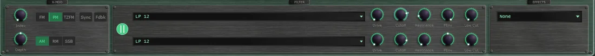
12. Insert Effect
The EFFECTS box is the per-voice insert effect, placed after the gate (oscillators, then filters, then gate, then insert, then mixer). Select an algorithm from the dropdown; its four parameter knobs relabel to match. Available algorithms: None, Soft Clip, Hard Clip, Fold, Bitcrusher, Clipper, 3-Band EQ, Compressor, Limiter, Ring Mod, Tape Saturation, Overdrive, Karplus, Chorus, Flanger, Phaser, Vocoder, and Vocoder Stereo. Tape Saturation gives the soft squash of a tape machine: Drive pushes the signal in (the highs compress and soften first), Output sets the level, Head Bump adds up to 4 dB of low-end lift around 75 Hz, and Tone darkens the result. Chorus, Flanger and Phaser sound like the Effect send of the same name, with a Mix knob. Insert parameters P1 to P4 are available as modulation destinations. The Clipper shows a gain-reduction meter like the Compressor. Time, rate and cutoff knobs give more of their travel to the short and low settings, so fine adjustments there are easier; this includes the time and rate knobs of the Effect, Delay and Reverb.
13. Gate Editor
The gate editor is the heart of mu-Tant's rhythmic character. It occupies the full-width band below the voice panel and chops rhythmic bursts out of the otherwise-continuous drone.
Layers
Three layers, toggled by the GATE, FILT, and PITCH buttons:
- GATE — shapes amplitude. Envelope value 0 is silent, 1 is full level.
- FILT — shapes filter cutoff. 0 is 20 Hz (closed), 1 is the base cutoff (open). Depth set by each filter's FEnv knob.
- PITCH — shifts oscillator pitch. 0 is no shift, 1 is the full PEnv depth above the base Semi. Depth set per oscillator by the PEnv knobs.
The inactive layers are drawn as ghosts at 20 percent opacity so you can align layers visually.
Grid Controls
- Bypass — passes the raw drone through without gating, for auditioning the oscillator/filter sound while designing a patch.
- Bars (1 to 16) — the pattern length in bars. The view window is always two bars wide; a scrollbar below the grid scrolls smoothly through longer patterns. All three layers share the same length.
- Grid — the cell subdivision: 1/4, 1/8, 1/16 (default), or 1/32.
- Gap — forces a silence tail at the end of every envelope region. At 0 percent the envelope fills the full region; at 50 percent it completes in the first half and the second half is silent.
Toolbox
Three tools in the header, drawn as small icons:
- Pencil — click an empty cell to draw a one-cell envelope; drag the start/end grab handles (bottom corners) to extend a region
- Eraser — click an envelope to delete it
- Reverse — click an envelope to flip its attack and decay
Envelope Shape
Each envelope covers a contiguous region of cells and has an attack/decay shape:
- Top handle (the peak point) — drag horizontally to move where within the region the peak falls. Far left is instant attack (pure decay); far right is slow attack with no decay. Snaps to the grid; hold ALT for fine placement.
- Attack bend handle (mid-point on the rising line) — drag vertically to bow the attack.
- Decay bend handle (mid-point on the falling line) — drag vertically to bow the decay.
A new envelope defaults to instant attack with a linear decay - the classic gate sound.
Audio Behaviour
- Stopped — silent (gate closed)
- Playing, empty pattern — silent (nothing drawn passes)
- Playing, has envelopes — per-sample envelope evaluation
- Bypass on — raw drone passes regardless of play state
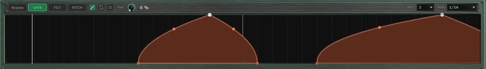
14. Modulators
Each voice has eight independent modulators (Mod A through Mod H) plus a Matrix tab - the same shared engine as mu-Clid. Each voice has its own modulator bank.
Each modulator has a Mode dropdown (Stepped bar-graph or Smooth drawable curve), a Polarity switch (Uni 0 to +1, or Bi -1 to +1), and a loop length (a note-value dropdown times an integer multiplier, independent of any pattern length). A playhead line shows the current loop position. In Smooth mode the curve is a smooth line through each point that never swings past its neighbours; click to add a node, drag to move, ALT-click a segment to bend it, right-click to remove. In Stepped mode, drag bars up or down. A dice button randomises the current modulator's values without changing its shape.
Add destinations with the + Target button; the assignments are shown one at a time, so step through them with the up and down arrows and the counter at the right; each assignment has a bipolar depth (-100 to +100 percent) and a source-side curve. mu-Tant modulation destinations include: Osc 1/2 Octave, Semi, Fine, Position, and Pitch Env; Osc 1/2 and Noise levels; Filter 1 and Filter 2, each with Cutoff, Resonance, Drive, Low Cut, and Env Depth; the voice Level; X-Mod Index, Depth, and SSB shift; and Insert P1 to P4. When a knob is a destination, an arc around it shows the live modulated value.
The Matrix tab lists every assignment across all eight modulators in one table.
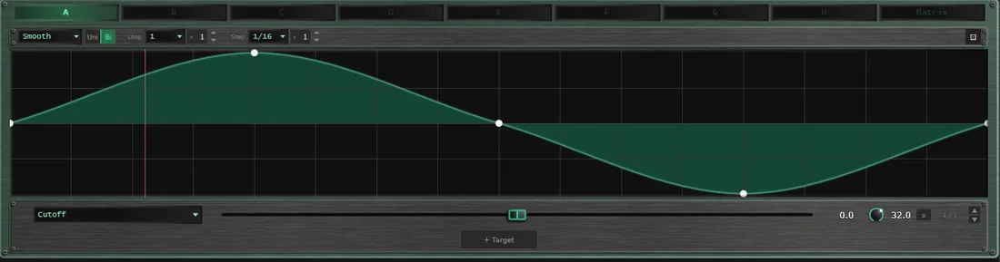
15. Mixer
Click the Mixer button in the transport bar to open the mixer overlay. Each voice occupies one channel strip; to the right are the Effect, Delay, and Reverb return channels and the Master strip. This is the same shared mixer and FX rack as mu-Clid.
Each voice strip has a fader with VU metering, pan, mute and solo, sidechain ducking (source, amount, attack, release), and Effect / Delay / Reverb sends. The sidechain source dropdown includes all other voice channels plus an External option — duck any voice from any other, or from a signal fed in through the host's sidechain bus (VST3 / CLAP). The FX return strips carry intra-FX routing (Effect to Delay, Effect to Reverb, Delay to Reverb), and the master strip has two inserts, Insert 1 and Insert 2, that the summed output passes through in that order. A row of buttons at the top right (Peak, VU, K-12, K-14) chooses the metering standard. The Effect send is named after the effect currently chosen (for example Chorus). The three FX unit rows (Effect / Delay / Reverb) sit below the strips with algorithm selectors and inline parameters.
The faders use a rectangular cap like a small knob, with a pointer line across its middle that marks the level, running in a groove that lights up from the bottom to the cap. Every fader in the mixer looks and works the same way. In the Status Bar the mixer's Pan, Send and Sidechain knobs, the Level fader, the Mute and Solo buttons and the Effect and Delay switches all show their name and value as you use them. The sidechain Attack and Release start at 0 and can go down to 0.
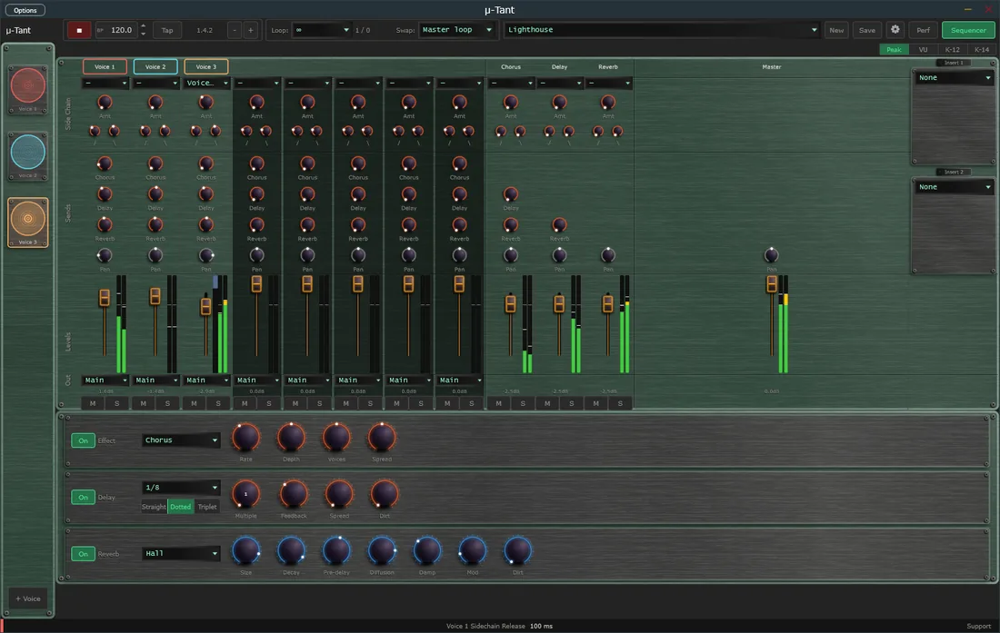
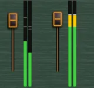
16. Presets
Full Presets (.muTant)
Full presets save the entire plugin state - all voices, modulators, gate patterns, mixer, and FX - to Documents\TDP\muTant\Presets. Load from the transport dropdown, which is grouped by category; the preset browser shows each preset's category and description. Save with the Save button: enter a name, an optional description and a category, and tick Save as Default to make it the preset that loads at startup and when you press New. If saving fails (for example a full disk) mu-Tant shows an error message and never leaves a half-written preset.
Presets and saved DAW projects store each setting's real value, and choices by name, so a future update that changes a knob's range cannot change a saved sound. When a preset, a voice preset or a saved session is loaded, any setting it does not contain is set to its default."
Per-Voice Presets (.muPattern)
Each voice can be saved and loaded independently to Documents\TDP\muTant\Voices, including its oscillator, filter, insert, and level settings, all three gate layers (GATE / FILT / PITCH), and modulator assignments. Use the voice header dropdown and Save button.
Clips
A clip is a stored copy of one voice's current state, ready to recall in a moment while the music plays. Every voice has up to eight clips. They sit in the Clip strip in the voice's header, between the voice-preset dropdown and the Save button: the word Clip followed by pads numbered 1 to 8. Use clips to prepare variations of a voice and switch between them in time.
Each pad is lit in the voice's own colour:
- Bright and steady — the clip that is playing.
- Dim — a clip is stored here and is available.
- Unlit, with just its number — the pad is empty.
- Pulsing — the clip is queued and will start at the next swap point.
- Flashing on and off — the playing clip belongs to a muted voice.
How to use the pads:
- Click a stored pad to launch it. If playback is running, the clip waits for the next swap point (set with the Swap dropdown) and the pad pulses until it starts; when playback is stopped it starts at once. Clicking another stored pad while one is waiting replaces the waiting clip.
- Click the playing pad to mute the voice. Click it again to unmute. If another clip is waiting, the click cancels the wait instead and the playing clip carries on.
- Click an empty pad to store the voice's current state there. Nothing is lost, so there is no question. The new clip becomes the playing one.
- Shift + click any pad to store the voice's current state in it. If the pad holds a different clip from the one playing, mu-Tant asks you to confirm with Replace. Storing over the playing clip, to update it after a tweak, needs no confirmation.
- Right-click a pad (or Ctrl + click) to open a small menu with Store here and Clear. Clear is available only on a stored pad and asks you to confirm. Clearing the playing clip leaves the voice playing as it is; no pad is lit afterwards.
Turning a knob changes only the voice that is playing, not the stored clip. To keep a tweak, store it again with Shift + click. Recalling a clip replaces any changes you have not stored, without asking.
Resetting a voice with Reset also clears its clips; the confirmation then reads This also clears its clips. Deleting a voice removes its clips with it. Clips are saved with full presets (.muTant) and with your DAW session or standalone state. Clips are not saved in single-voice .muPattern files.
In Performance mode the Clip strip cannot be clicked, but it keeps moving so you can see what the control surface is doing.
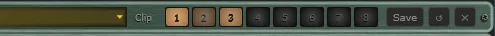
Performance Mode (Standalone)
Performance mode turns the standalone app into a locked gig view. The screen shows the preset that is playing, exactly as normal, but you cannot change anything with the mouse or keyboard. Only a connected control surface (set up through MIDI mapping) switches presets and voices. Performance mode is not available in the VST3 or CLAP plug-in.
Performance mode plays a performance: a saved list of up to eight full presets, stored as a .muPerformance file in the Performances folder inside your content folder. You make, edit and choose performances in the Performance chooser.
The Performance Chooser
Open the chooser from the Performances entry at the bottom of the preset dropdown in the Transport Bar, from the Performances button in the footer of the Preset Browser, or by clicking the Perf button (or pressing Ctrl+P) when no performance has been chosen yet. You can only open it while Performance mode is off.
- On the left is the list of your saved performances. Click one to open it. The list scrolls.
- On the right are the eight places in the performance. Each row shows its number, the preset name, which product the preset is for, and buttons. An empty row has a + Preset button. A filled row has Replace, Up, Down and Remove: Replace picks a different preset, Up and Down move the preset in the order, and Remove empties the place.
- A preset whose file can no longer be found stays in its place with a red lamp and the word missing. Replace it or remove it.
- New starts an empty performance. Load opens a .muPerformance file that you choose from disk into the list; it never saves anything. Save stores the performance under a name and an optional description. Rename changes its name. Delete removes the saved file after asking you to confirm. Saving under the name of another performance asks before it overwrites.
- Use makes this performance the one that Performance mode plays, then closes the chooser. It does not change the preset that is playing now. If the performance is new or has changes you have not saved, Use saves it first (a new one asks for a name). Use is unavailable while the performance has no presets.
- While you have unsaved changes the title shows the name followed by (unsaved). Closing the chooser, clicking New, or opening another saved performance then asks Discard unsaved changes? Choose Discard to lose the changes, or cancel to keep working.
To fill a place, click + Preset or Replace. The Preset Browser opens in pick mode: its Load button reads Pick, and the Performances button is hidden. Select a preset and click Pick (or double-click it) to put it in the place and return to the chooser with your other edits kept. Close returns to the chooser without picking. The browser lists presets for this product only.
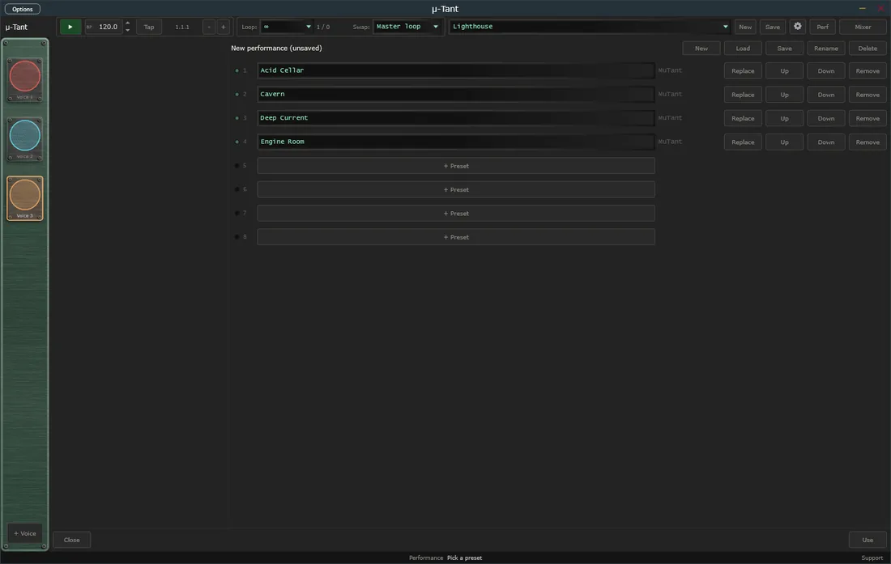
Entering
Click the Perf button (or press Ctrl+P). The preset that is playing carries on. Any open window, such as the Preset Browser, Mixer or Settings, closes without saving. If no performance has been chosen yet, the Performance chooser opens instead and the mode stays off.
What You See
- The Perf button lights in the app colour and its label changes to LIVE, and a thin lit line runs along the bottom of the Transport Bar.
- The preset dropdown, New and Save are replaced by a step indicator: a display showing the position and name of the playing preset (for example 3/8 Bassline), followed by a dimmed next preset when there is room, and a row of eight lamps. A bright lamp is the playing preset, a dim lamp is an available preset, a pulsing lamp is the preset queued to start, and an unlit lamp is an empty place. A red lamp marks a preset whose file is missing.
- When the control surface queues a switch, the playing preset stays on screen until the switch lands. The queued lamp pulses, an orange SWP badge appears, the display shows the queued preset in pulsing text, and the status bar reads Queued followed by the preset. All of this clears when the switch happens or is cancelled. The switch lands at the point set by the Swap dropdown.
- In the sidebar, the Add button is replaced by a read-only indicator such as Layer 3/5. The screen follows the control surface: selecting a voice on the surface shows that voice on screen.
- Nothing dims or changes colour; knobs, meters and the playhead keep moving, so you can see what the surface is doing.
Leaving
Press and hold the Perf button for one second. The button fills from left to right while you hold, and the status bar reads Hold to leave Performance mode. Let go early to stay in the mode. A plain click does nothing, so you cannot leave by accident. When you leave, the normal controls come back.
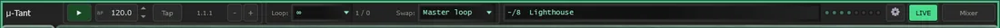
17. Settings
Click the gear icon to open the Settings overlay. Everything fits on one screen, in two columns, under two headings. Click Close to return.
General (left column):
- Audio, Master Vol — overall output level
- Display, Size — Medium or Large window. Reopen the app for the label fonts to rescale fully.
- Transport, Tempo — internal clock, 20.0 to 300.0 BPM with one decimal, also editable from the transport BPM field
- Time Signature (standalone) — in Settings under General, Transport: 2/4, 3/4, 4/4, 5/4, 6/4, 7/4, 5/8, 6/8, 7/8, 9/8 or 12/8; default 4/4. It changes how the bar.beat.sixteenth Position readout counts (a beat is a quarter note in x/4 and an eighth note in x/8). Patterns still run in four-beat bars.
- Updates, Check for updates — a tick box, ticked by default. Whether the app checks once a day for a newer version (see Update Check below).
MIDI (right column):
- MIDI Clock, Source (standalone) — Internal, or MIDI In to follow an external MIDI clock, with a Sync Offset to compensate for audio latency (see below).
- Note Mode, Mode — Free or Note (see Note Mode).
- MIDI Program Change — the Voice Presets and Full Presets buttons open the tables that map incoming program-change messages to presets (see below).
A Contact Support link at the bottom of the page is there when you need help. The Settings page also has a Send Feedback link (feedback@transwarp.me) beside Contact Support.
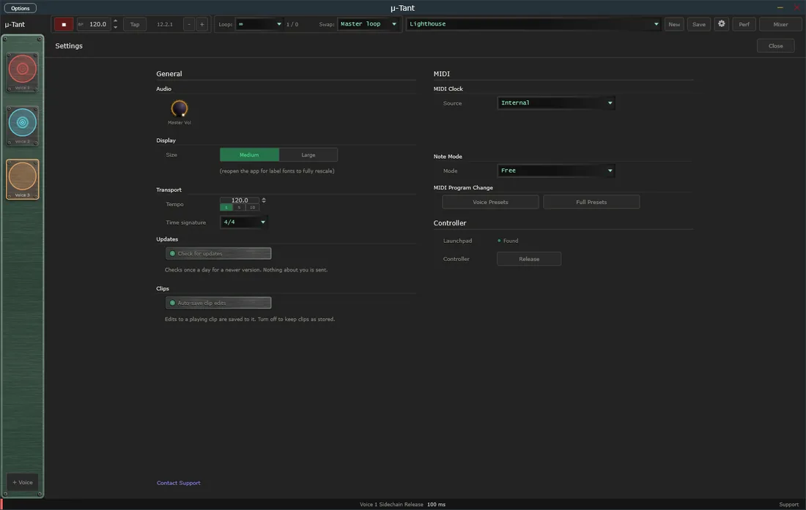
Update Check
mu-Tant can tell you when a newer version is available. Once a day it asks the transwarp.me website for the latest version number. When a newer version exists, a small Update available link appears at the right of the Status Bar, beside the Support link. Hover over it to see which version is out and which one you have.
- Click the link to open the download page in your web browser. mu-Tant never downloads or installs anything itself. The link then stays hidden for that version and comes back only when a still newer one is released.
- Right-click the link and choose Hide this notice to hide it for that version without opening the page.
- The link never appears in Performance mode.
Privacy: the check is a plain request for a public file. It sends nothing about you: no name, no identifier, no version number and no details of your computer. As with any request to a website, the site can see your internet (IP) address, as it would if you opened the page in a browser. The app compares the answer with its own version on your machine. To switch the check off, open Settings and, under General, untick the Check for updates box. With the box unticked, mu-Tant sends no request at all and shows no link. The box is ticked by default.
MIDI Clock Sync (Standalone)
When running as a standalone application, mu-Tant can follow an external MIDI clock from a drum machine, groovebox, or DAW. First choose the MIDI input that carries the clock in the standalone's MIDI settings. Selecting the input does not turn sync on by itself. To follow the clock, open Settings and, in the MIDI Clock section, set Source to MIDI In; set it back to Internal to turn sync off and ignore any incoming clock. A Messages choice appears, which decides what mu-Tant takes from the clock:
- Clock only — you start and stop mu-Tant with its own Play button, but the tempo and beat follow the clock's ticks. The BPM field is locked and shows the clock's tempo. The clock's Start and Stop messages are ignored.
- Transport only — the clock's Start, Continue, and Stop messages control playback (Start restarts from bar 1, Continue carries on from where it stopped), but mu-Tant plays at the tempo in its own BPM field and ignores the clock's ticks. The Play button is locked.
- Clock + Transport — the clock runs everything. Its Start, Continue, and Stop messages start and stop playback, and its ticks set the tempo and the beat. The first clock after Start counts as the downbeat, so your steps line up closely with the external device. The Play button and BPM field are locked.
With Clock + Transport or Transport only, mu-Tant also follows Song Position Pointer messages. If you stop the external sequencer, move its playhead, and press Continue, mu-Tant picks up from the new position instead of where it stopped.
With Clock only or Clock + Transport, a Clock lamp appears in the transport bar, between the BPM display and the Position readout. It shows the state of the incoming clock and stays steady in every state; it never blinks:
- Dim amber — Waiting for clock. Sync is on, but no clock pulses have arrived yet, or the master device is stopped and sending nothing.
- Green — Locked. mu-Tant is following the clock. Hover over the lamp and the status bar shows the tempo, for example "Locked at 120 BPM".
- Red — Lost. The clock pulses stopped arriving for about a quarter of a second while the master was playing, for example because a cable came loose or the master device was switched off. mu-Tant stops the transport, and the status bar shows "MIDI Clock: Lost, transport stopped" once, without you having to hover. When the pulses come back, mu-Tant carries on by itself.
The lamp is hidden with Transport only, because the clock's ticks are not used, and whenever Source is Internal. The BPM display works as before: it is locked and shows the clock's tempo while the clock sets the tempo.
Sync Offset — with Source set to MIDI In, a Sync Offset field appears in the MIDI Clock section of Settings. It runs from −50 to +250 ms (the label reads simply Sync offset) and defaults to 0. The value is shown with a sign, for example +25. The arrows step 1 ms; Shift+click steps 10 ms. A positive value makes mu-Tant play earlier than the clock says. Enter your audio output latency here (about 20 to 40 ms on Windows WASAPI) so the sound lands on the beat of a hardware master. mu-Tant remembers the setting between sessions.
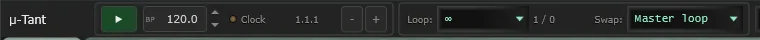
Note Mode
By default (Free) mu-Tant ignores MIDI notes: the drone plays all the time and the gate follows the transport. Setting Note Mode, Mode to Note turns mu-Tant into a keyboard instrument: the drone is silent until you hold a key, and fades out (in about 8 milliseconds) when you release the last one. While a key is held, every voice is transposed so its tonal centre (the Root) sits on the note you are holding, and the scale, oscillator and modulation settings still apply on top. With several keys held, the most recently pressed one sounds. The gate pattern keeps running on the transport as usual.
MIDI Program Change to Preset
mu-Tant can load presets from incoming MIDI program-change messages. On channels 1 to 8 a program change loads the matching .muPattern into that voice slot; on channel 9 it loads a full .muTant preset. While playing, the change is staged and applied seamlessly at the next loop boundary (hot-swap). Configure the mappings with the Voice Presets and Full Presets buttons in Settings, under MIDI Program Change.
18. Connecting to mu-link
mu-link is a companion application from Transwarp Development Project: a local audio hub and master clock for the mu family. When mu-link is running, the mu-Tant standalone application connects to it automatically — mu-Tant's audio is summed into mu-link's mix and its transport locks to mu-link's master clock. The plug-in versions are unaffected; only the standalone connects, because in a DAW the host already owns the clock and audio device.
How to Connect
- Launch mu-link, then launch mu-Tant standalone — in either order. Within about a second the mu-Tant title bar shows 'mu-link connected'.
- mu-Tant's audio now plays through mu-link's output device, summed with any other connected mu apps, and appears as a channel in mu-link's client strip with its own level, pan, mute, and solo.
- mu-Tant's gate and modulators follow mu-link's clock: mu-link is the tempo master, and its Play/Stop and tempo drive mu-Tant. Use mu-link's transport (not mu-Tant's) while connected.
- Quit mu-link and mu-Tant instantly reverts to its own audio device and internal transport — no restart needed.
- MIDI in — the controllers you enabled in the standalone's MIDI settings still reach mu-Tant while it is connected, so program changes still load presets. For now they arrive roughly 85 milliseconds late, which is under a tenth of a second. Incoming MIDI clock is not followed while connected, because mu-link sets the tempo; to sync to external gear, connect its clock to mu-link instead.
This lets you run mu-Tant, mu-Clid, and other mu standalones together, perfectly in sync and mixed to a single output — and lets mu-link slave the whole rig to an external MIDI clock. See the mu-link User Manual for the full picture.
19. Signal Flow
Osc 1 and Osc 2 are combined with FM / AM / Ring cross-modulation and optional hard Sync, summed with the Noise source, then passed through the dual filter (series: Filter 1 into Filter 2; parallel: Filter 1 plus Filter 2 mixed). The result passes through the gate (GATE layer amplitude, FILT layer cutoff sweep, PITCH layer pitch shift), then the per-voice insert, then into the voice's mixer channel. The mixer routes channel strips through the Effect / Delay / Reverb sends to the master and out.
20. Tips and Workflow
- Starting from silence: press Play, then draw at least one cell on the GATE layer - an empty gate produces no sound.
- Auditioning the raw drone: press Bypass in the gate editor to hear the uncut oscillator/filter tone.
- Dual-filter character: set Filter 1 to Comb + and Filter 2 to LP 24 in Series for a tuned resonator rolled off by a smooth low-pass; or use Parallel with a low-pass on one side and a high-pass on the other to carve a band.
- Layered pads: add several voices with different Semi offsets (e.g. 0, 2, 4 for a triad in the scale) and staggered gate patterns.
- Filter morphing: draw a slow attack / fast decay on the FILT layer and set FEnv to 1.0 - the filter opens slowly then snaps closed on each gate event.
- FM drones: set Lane A to PM (or FM), raise the Index knob to 60 to 80 percent, and modulate Osc 2 Semi with a stepped sequencer - each step adds a new FM timbre as Osc 2's ratio changes.
- Long evolving patterns: set Bars to 8 or 16 and scroll through the pattern, combining sparse GATE hits with a slowly drifting Smooth modulator on Filter Cutoff.
21. Technical Specifications
- Formats: VST3, CLAP, Standalone (Windows)
- Voices: up to 8 simultaneous, each with two wavetable oscillators plus a noise source
- Cross-modulation: 2-lane X-Mod - phase/index (FM/PM/TZFM) with Sync and Feedback, plus amplitude (AM / RM / SSB frequency shift)
- Filters: two per voice (series or parallel), 16 algorithms each
- Filter types: LP / HP at 6, 12, 24 dB per octave; BP 12 / 24; Notch 12 / 24; AP 12; Comb + / Comb -; Peak; Lo Shelf; Hi Shelf
- Insert effects: 14 plus None (Soft Clip, Hard Clip, Fold, Bitcrusher, Clipper, 3-Band EQ, Compressor, Limiter, Ring Mod, Tape Sat, Overdrive, Karplus, Vocoder, Vocoder Stereo)
- Gate editor: 1 to 16 bar patterns, three layers (GATE / FILT / PITCH), subdivisions 1/4 to 1/32
- Modulators per voice: 8 (smooth LFO or stepped), plus a matrix view
- Full preset format: .muTant (XML). Per-voice preset format: .muPattern (XML)
- Third-party libraries: JUCE, Signalsmith Reverb (MIT), Monocypher (BSD-2-Clause), clap-juce-extensions (MIT)
Hosts That Do Not Run an Event Loop
mu plugins need the host to run its normal event loop, as every ordinary DAW does. A few headless or offline-only renderers do not. In those, changes made by MIDI or a controller, MIDI program changes, and preset loads made while playing may not take effect until the host runs its event loop. If you hit this, load presets while the transport is stopped, or render with a host that runs its event loop.
22. Design Decisions (Not in mu-Tant)
- No amplitude envelope - the gate stage does this job.
- No triggered notes - oscillators run continuously and a key press never restarts them. MIDI notes only matter in Note Mode, where a held key opens the drone and sets its pitch (see Note Mode). MIDI program change loads presets - see Settings.
- No user audio samples - oscillators use wavetables only, though you can import your own Serum/Vital-format wavetable .wav files (see Wavetables).
- No granular - pure wavetable synthesis.
Prefer a file? Download the manual as a PDF. Back to mu-Tant · release notes · all guides.